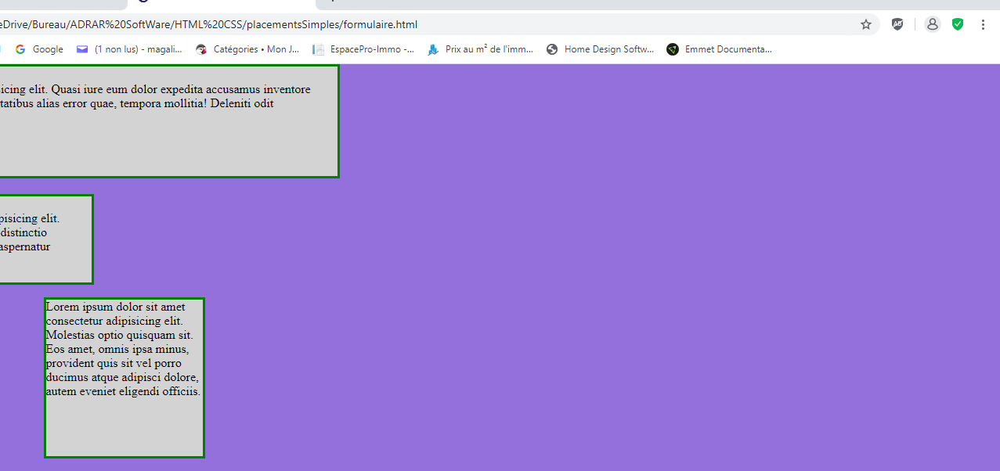
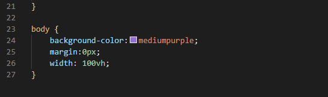
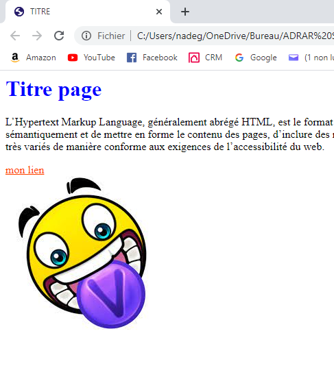
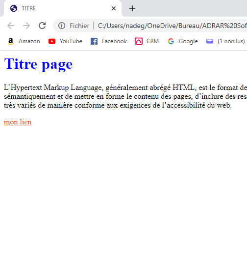
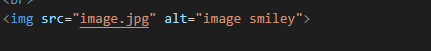
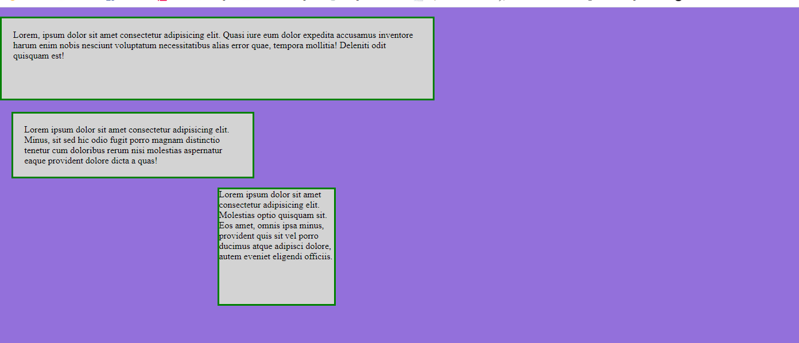
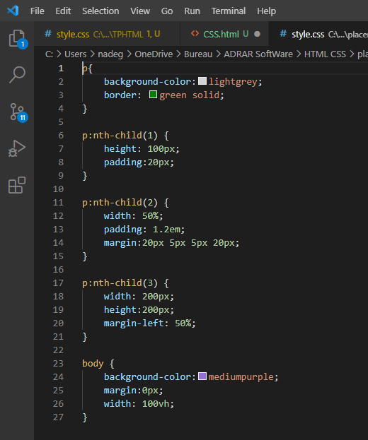

Les bases du CSS
Le fichier CSS est un fichier qui est appelé par dans un fichier HTML afin d'effectuer la mise en page d'une page web.
Ce fichier est exécuté par le navigateur dans l'ordre des instructions qui y sont inscrites.
Nous pourrons préciser tous les éléments de la mise en page.
La mise en page est effectué sur chaque zone qui est appelé par des sélecteurs.
Les différents sélecteurs sont les ID, les Class et les balises de la page HTML.
Différentes propriétés peuvent être appliquées à chaque sélecteur et chacune de ses propriétés peut prendre plusieurs valeurs.
Ici, pour appliquer un fond violet nous allons appliquer au sélecteur BODY la propriété BACKGROUND-COLOR avec la valeur MEDUIMPURPLE.


Les Pseudos Class
Une Pseudo Class est un mot clé qui est lié à un sélecteur afin d'effectuer une action dans notre fichier CSS uniquement lorsque le sélecteur est dans un état particulier. Ou bien de sélectionner uniquement certains enfants du sélecteur.
Ici, nous allons faire disparaître l'image au survol de la souris grâce à la pseudo class hover que l'on va appliquer à la balise image.




Les Placements Simples
Chaque élément d'une page est appelé le Contenu est encadré par plusieurs éléments.
Chaque Contenu est dispose d'un cadre appelé border, cette bordure pourra être mise en page et s'afficher à l'écran.
La zone qui se trouve entre le Contenu et sa Border est appelé Padding, sa mise en page peut être défini dans notre feuille CSS.
La zone qui se trouve entre la Border et le cadre de l'élément parent s'appelle Margin. Cette marge peut aussi être mise en forme dans notre CSS.
Ici, les enfants des sélecteurs P sont appelés chacun à l'aide d'une pseudo class :nth-child(). Les éléments de largeur sont ajustés avec WIDTH, les hauteurs avec HEIGHT, les marges avec MARGIN, les marge intérieure avec PADDING et les bordure avec BORDER.

